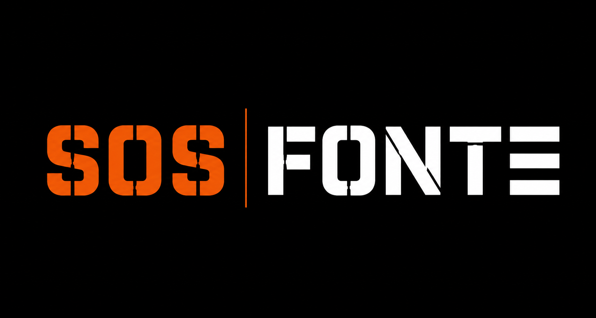

📞 01 80 84 60 40Chaque intervention est documentée. Voici quelques exemples de chantiers réalisés en Île-de-France sur des réseaux en fonte.
Décrivez votre situation — nous vous répondons sous 2h avec une estimation et des références de chantiers comparables.
🚨 Une urgence fonte ? Ne laissez pas la situation s'aggraver.
Appeler maintenant